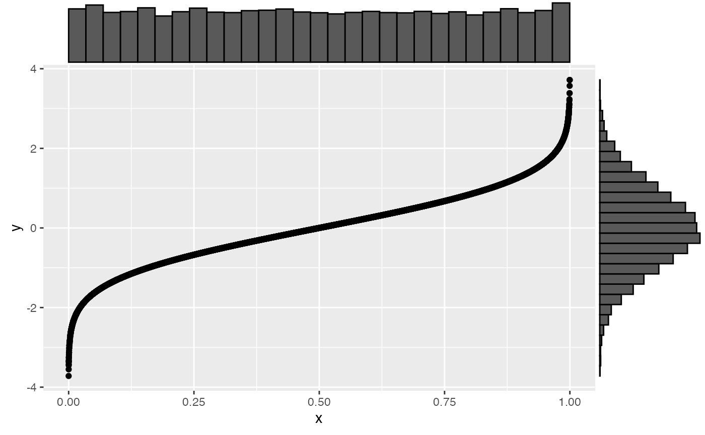

Convert a uniform distribution to a normal (gaussian) distribution with specified mu and sd
unif2norm(x, mu = 0, sd = 1, min = NULL, max = NULL)
| x | the uniformly distributed vector |
|---|---|
| mu | the mean of the normal distribution to return |
| sd | the SD of the normal distribution to return |
| min | the minimum possible value of x (calculated from x if not given) |
| max | the maximum possible value of x (calculated from x if not given) |
a vector with a gaussian distribution
#>#>g <- ggplot2::ggplot() + ggplot2::geom_point(ggplot2::aes(x, y)) ggExtra::ggMarginal(g, type = "histogram")